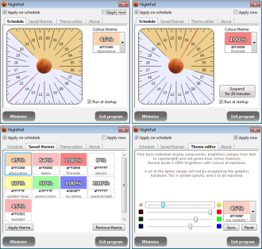

Screen color dimmer for nocturnal hours
Index
Downloads
Screenshots
View the Project on GitHub suurjaak/NightFall
A small tray program that can change screen brightness and colour gamma settings on schedule, in order to achieve a more natural feeling during late hours.
Looking at a lit screen in a dark room can interfere with the sleep cycle, NightFall can provide a warm-coloured darker screen on desktop and laptop computers alike.
Comes with a number of pre-defined brightness and colour themes, you can also create and save your own themes.
Screenshot collage:

NightFall stays in the system tray as a grey or orange moon icon, depending on being active, dimming the screen on command or according to the set schedule.
Schedule can be set in quarter-hour steps.
Applied theme can be suspended for a selected number of minutes.
Double-clicking the tray icon toggles current colour theme on or off;
on by schedule if schedule covers current time but is currently disabled.
Single-clicking the tray icon shows or hides the options window.
Right-clicking the tray icon opens options menu.
Left-clicking on time schedule toggles time period on, right-clicking off,
same for clicking and dragging.
Double-clicking on time schedule toggles an entire hour on or off.
Scrolling the mouse wheel on time schedule grows or shrinks the current
active section.
Works under Windows, might work under Linux/OSX.
If launching the program manually, --start-minimized command-line option
will auto-hide the settings window initially.
Run python nightfall.py if using the source distribution.
If running as a Python script, NightFall requires Python 2.7 and wxPython 4.0+ (wxpython.org)
Built with Python (python.org) and wxPython (wxpython.org).
Includes several icons from Fugue Icons, © 2010 Yusuke Kamiyamane, p.yusukekamiyamane.com.
Windows binaries built with PyInstaller (pyinstaller.org).
Installers created with Nullsoft Scriptable Install System (nsis.sourceforge.io).
(The MIT License)
Copyright (C) 2012 by Erki Suurjaak
Permission is hereby granted, free of charge, to any person obtaining a copy of this software and associated documentation files (the "Software"), to deal in the Software without restriction, including without limitation the rights to use, copy, modify, merge, publish, distribute, sublicense, and/or sell copies of the Software, and to permit persons to whom the Software is furnished to do so, subject to the following conditions:
The above copyright notice and this permission notice shall be included in all copies or substantial portions of the Software.
The software is provided "as is", without warranty of any kind, express or implied, including but not limited to the warranties of merchantability, fitness for a particular purpose and noninfringement. In no event shall the authors or copyright holders be liable for any claim, damages or other liability, whether in an action of contract, tort or otherwise, arising from, out of or in connection with the software or the use or other dealings in the software.
{kind=link}